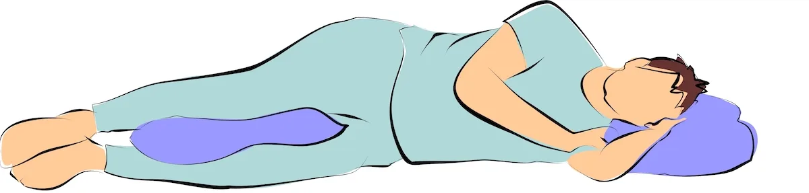

👉 Try to take breaks every 20-30 minutes and walk for 3 minutes.
👉 If you are a side sleeper, keep a thin pillow between your knees.
👉 If you are a back sleeper, keep a thin pillow under your both knees.
👉 Do not hold breath while doing any of following exercises.👈
Hold for 10 seconds / Repeat 3 times with both legs.
Hold for 10 seconds / Repeat 3 times with both legs.
Hold this position for 5 seconds/Repeat 10 times.
Repeat 5 times on both sides.
Hold for 10 seconds/Repeat 5 times.
Hold this position for 5 seconds/Repeat 10 times with both legs.
Hold for 10 seconds/Repeat 10 times.
Repeat 10 times with both legs.
Repeat 10 times with both legs.
Repeat 10 times with both legs.
Hold for 10 seconds / Repeat 3 times with both legs.
Hold for 5 seconds/repeat 10 times.
Repeat 10 times with both legs.
Hold for 5 seconds/repeat 10 times.